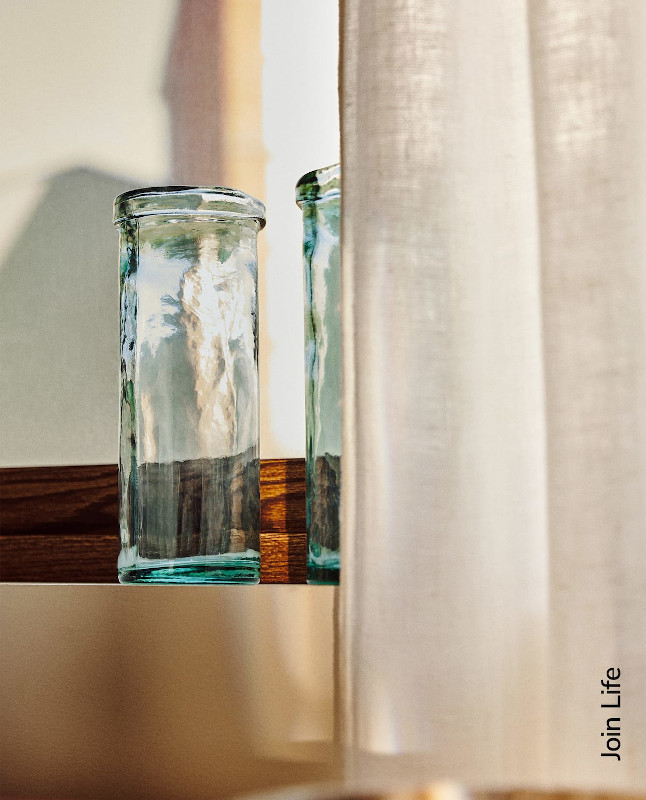

Стеклянная ваза полностью из переработанного стекла. Можно наливать воду.
2 799 руб.
Для производства этой вазы было использованно только стекло,
переработанное из потребительских отходов. Так же использована технология
со сниженными потреблением энергии и выбросами CO2.
Выбирая изделия из переработанных материалов, Вы оказываете меньшее
воздействие на окружающую среду.
Наружная часть 100% стекло.
Протирать влажной тряпочкой, можно мыть в посудомоечной машине.